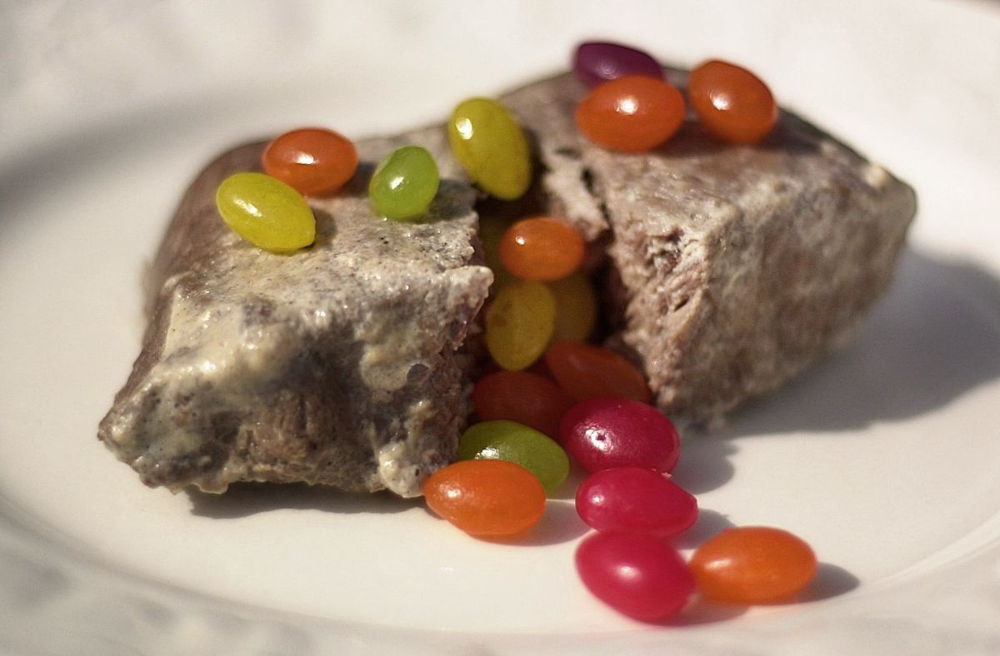

Back to homepage
Milk Steak

Description:
Famously introduced to the world by Charlie Kelly in "It's Always Sunny in Philidelphia", the milk steak is
a delicacy consisting of a steak boiled in milk. There are many variations on the milk steak, though traditionally
it is boiled over hard and served with a garnish of high-end jelly beans. This recipe attempts to recreate
the milk steak as Mr. Kelly himself envisioned it: an elevated dish that is as much an art form as it is a meal.
Ingredients:
- 1 medium 8.8oz flat iron steak
- 2 cups whole milk
- 1/4 cup honey
- 1/2 tsp cinnamon
- 1/2 tsp nutmeg
- 1 tsp vanilla extract
- 1/2 cup jelly beans
Steps:
- Add milk, honey, cinnamon, nutmeg, and vanilla to a medium saucepan.
- Heat until honey has dissolved completely.
- Bring to a boil, then carefully add the steak.
- Bring to a simmer, cooking the steak for 5 min on each side
- Remove the steak and check the temperature. We are looking for a steak boiled over hard, meaning there should be
no pink showing. If underdone, stick back in the simmering milk for a minute or two.
- Allow the steak to rest, then serve with a garnish of jelly beans.